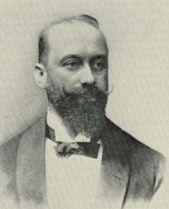

|  |
Elschnig's pearl = translucent mass following cataract surgery caused by aberrant attempt of lens epithelium to form lens fibres
Anton Elschnig studied in Graz, where he was conferred doctor of medicine in 1886. He turned to eye medicine and was active as an assistant at the ophthalmological clinics of Graz and Vienna. He was habilitated for ophtalmology in Graz in 1892, 1895 in Vienna. Becoming titular professor in 1900, he was was called to the German University of Prague as full professor in 1907
Elschnig was the publisher of the 2nd and 3rd edition of Handbuch der
gesammten Augenheilkunde by Albrecht von Graefe and Edwin Theodor Saemisch,
beginning from 1898 and 1912, respectively, and Johann Nepomuk Czermak’s
(1828-1873) Operationslehre, 2nd edition, Vienna, 1907. With colleagues
he published the Augenärztliche Operationslehre.
Bibliography: